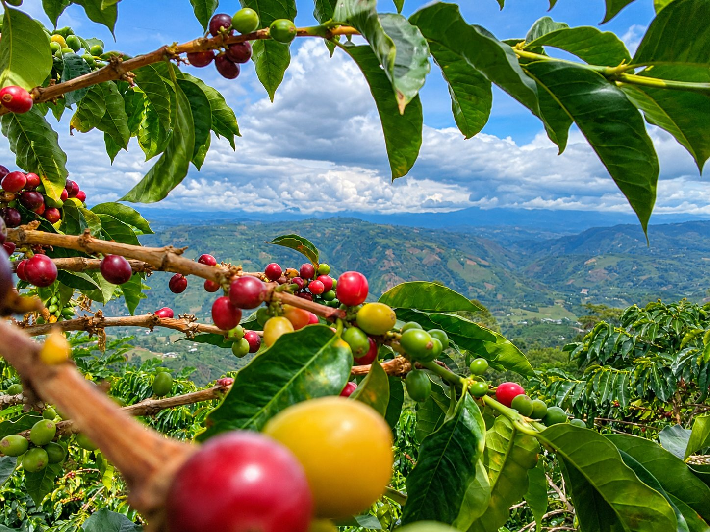
Café y agroindustria
Fortalecemos la transformación del café mediante secado mecánico, clasificación y articulación con productores para generar valor en origen.
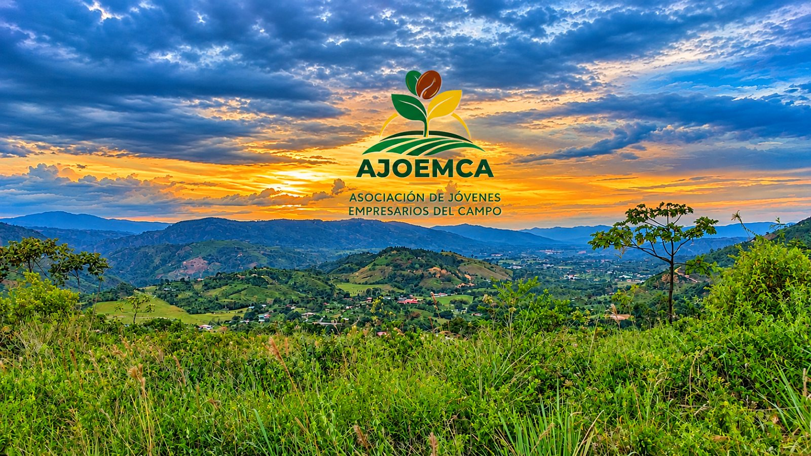
Impulsamos el emprendimiento rural conectando productores, conocimiento, transformación agroindustrial y nuevas oportunidades para el campo colombiano.
AJOEMCA —Asociación de Jóvenes Empresarios del Campo— es una organización sin ánimo de lucro con sede en Pitalito, Huila, orientada a promover el emprendimiento rural, fortalecer las capacidades productivas y generar oportunidades de desarrollo para las comunidades.
Articulamos productores, jóvenes emprendedores, profesionales y aliados estratégicos para impulsar iniciativas agropecuarias y agroindustriales, promover la transformación de productos y facilitar nuevas oportunidades de comercialización.
Estructuramos nuestro trabajo en cinco frentes complementarios para acompañar al productor desde el origen hasta el mercado.

Fortalecemos la transformación del café mediante secado mecánico, clasificación y articulación con productores para generar valor en origen.
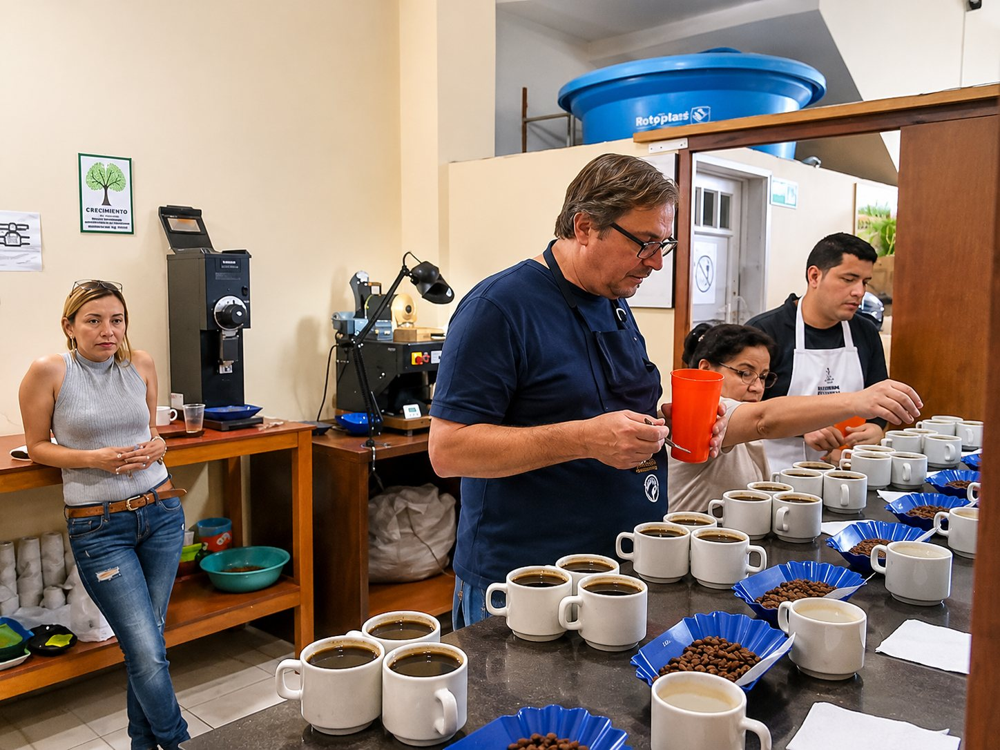
Promovemos iniciativas que integran conocimiento, tecnología, creatividad y capacidades empresariales para el sector rural.
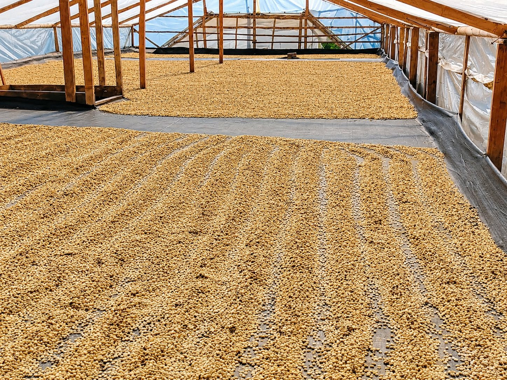
Impulsamos la formulación y gestión de proyectos productivos en articulación con entidades públicas, privadas y comunitarias.
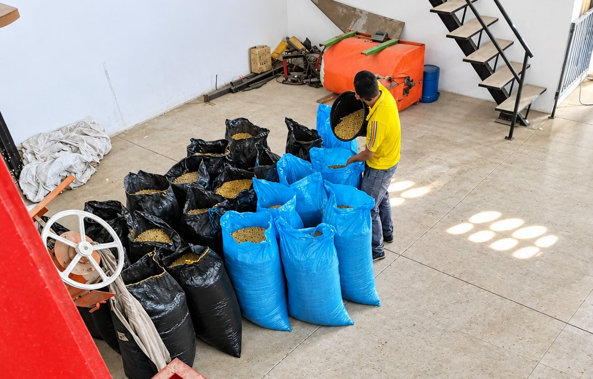
Facilitamos conexiones entre productores, compradores, empresas y aliados para fortalecer las cadenas productivas del campo.
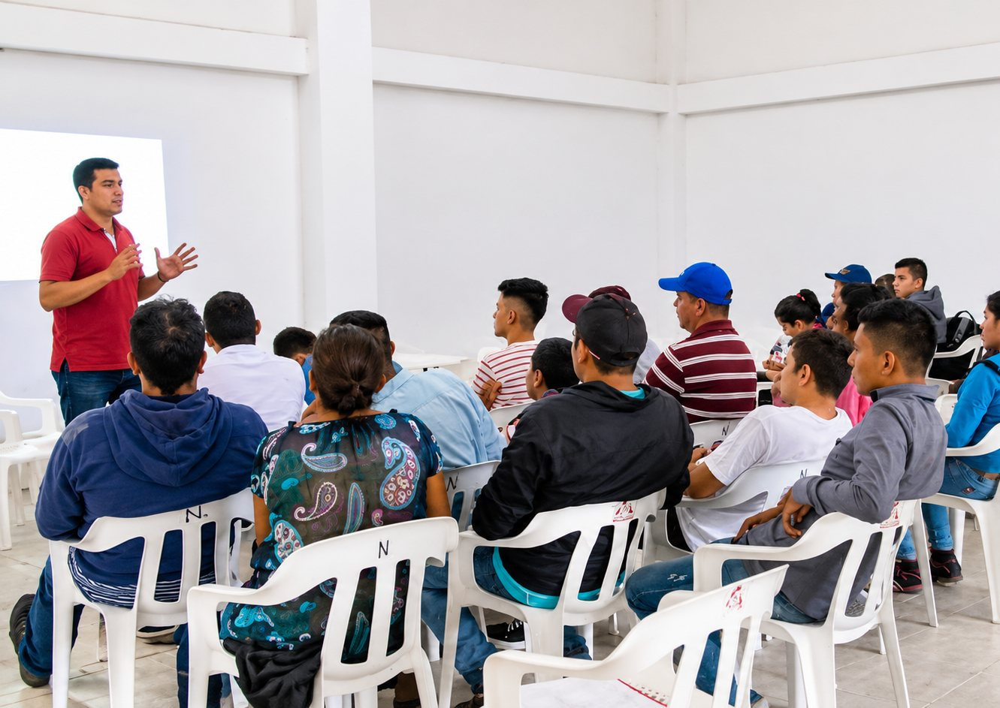
Promovemos iniciativas colaborativas que contribuyan al bienestar, la participación y el desarrollo sostenible de las comunidades rurales.
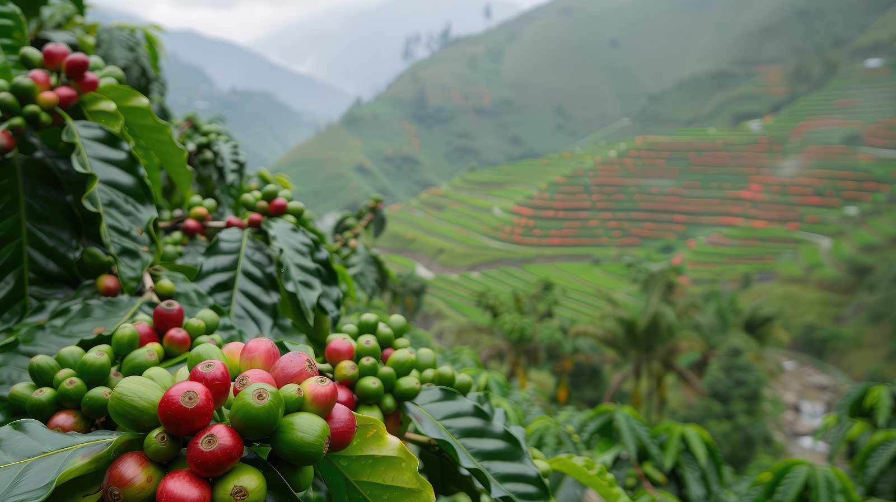
Conectamos la producción agrícola del territorio con procesos técnicos de transformación y canales de comercialización responsables.
Acompañamiento y articulación con productores rurales comprometidos con buenas prácticas agrícolas y respeto por el territorio.
Capacidades reportadas de secado mecánico y clasificación orientadas a proteger la calidad física y el potencial del café en origen.
Construcción de puentes comerciales transparentes entre unidades productivas, compradores y aliados estratégicos.
Trabajamos para conectar el esfuerzo de los productores con procesos que permitan destacar la calidad, la historia y el potencial del café de nuestra región.
La asociación reporta una guardiola de secado mecánico orientada al cuidado y estabilización del grano en origen.
La asociación reporta un monitor clasificador de café para apoyar la selección física del producto.
Nota institucional: Las capacidades operativas, condiciones comerciales y disponibilidad del servicio se confirman directamente según programación vigente de AJOEMCA.
AJOEMCA estructura iniciativas productivas, espacios de formación y alianzas institucionales para fortalecer el tejido empresarial rural. Los proyectos autorizados para divulgación pública se incorporarán en esta sección conforme avance su validación oficial.
Espacio conceptual de marca en etapa de formulación y exploración creativa. No corresponde aún a una marca registrada ni a una línea comercial activa o disponible para venta.
Buscamos articular personas y organizaciones interesadas en conocer nuestros procesos de participación y colaboración, sujetos a los estatutos vigentes de la asociación.
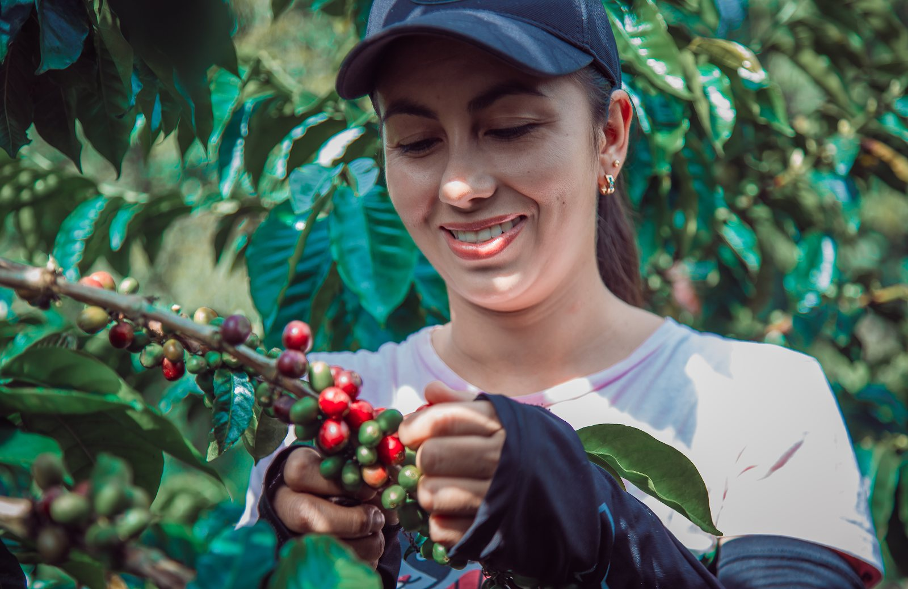
Personas vinculadas a actividades agropecuarias y unidades productivas.
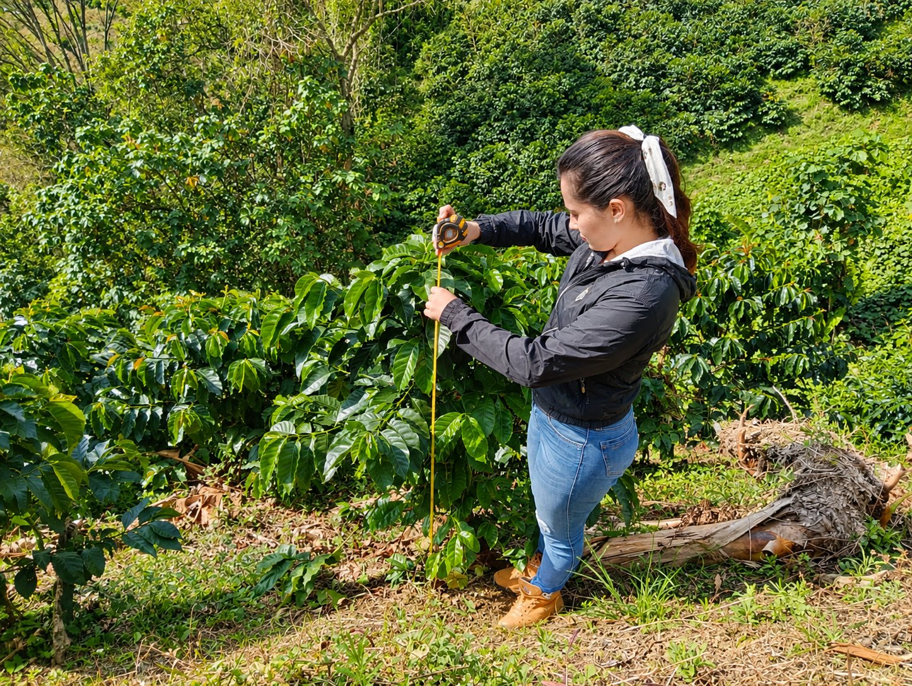
Personas que aportan conocimientos especializados, asistencia técnica o gestión.
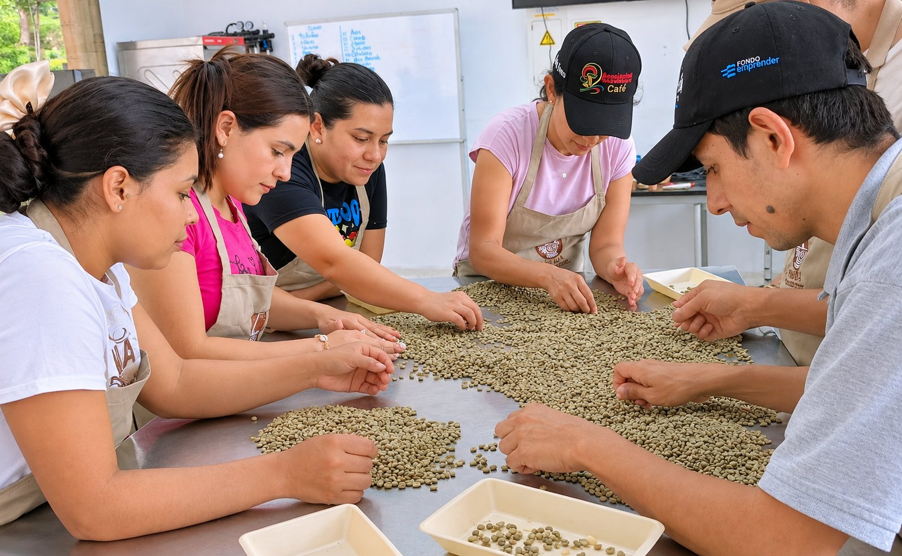
Organizaciones, empresas e instituciones interesadas en iniciativas conjuntas.
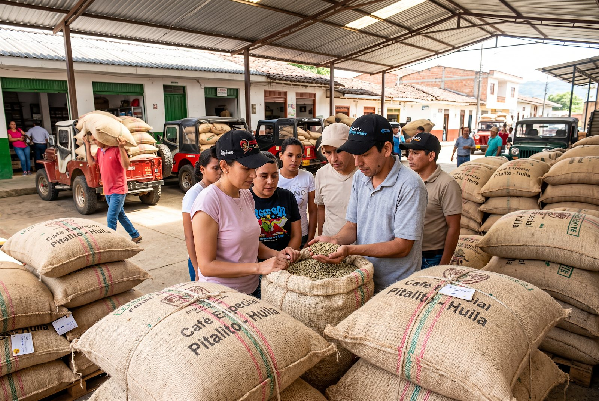
Personas y empresas interesadas en consultar productos o servicios.
Información clave sobre nuestra naturaleza institucional, procesos de participación y canales de consulta.
AJOEMCA es la Asociación de Jóvenes Empresarios del Campo, una organización sin ánimo de lucro con sede en Pitalito, Huila, Colombia, enfocada en el emprendimiento rural, la transformación agroindustrial y el desarrollo comunitario.
Productores, profesionales, técnicos y aliados pueden manifestar su interés a través del formulario de contacto. Toda participación se rige por los estatutos vigentes y las decisiones de la asociación.
Puedes enviarnos tu solicitud indicando el producto o servicio de transformación de tu interés. La disponibilidad, condiciones y programación operativa se confirman directamente por la asociación.
No. ATARAXIA 3020 (junto con sus ideas 3020 COFFEE, 3020 WEAR y 3020 EXPERIENCES) es una propuesta conceptual en desarrollo y no constituye aún una marca registrada ni una oferta comercial activa.
Momentos de cosecha, formación juvenil, selección comunitaria y trabajo en campo en el sur del Huila.
¿Quieres conocer nuestros productos, consultar servicios de transformación, vincularte como productor o proponer una alianza? Estamos interesados en conectar capacidades y construir nuevas oportunidades.
Completa el formulario para consultas comerciales, servicios de transformación o vinculación institucional.